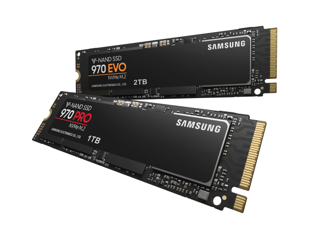
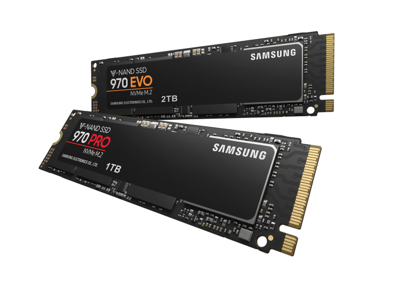

La mémoire
Il existe 2 grands types de moyens de stockage de données dans un pc : Les disques dures et les ssd (mvme) 

Les disques dures peuvent prendre en charge beaucoup de mémoire (les plus grands vont à 16tb)
Les ssd ont moin de mémoire mais sont bcp plus rapide, environ 4 fois plus rapide (les plus grands vont à 4tb)